Contents | Features | Reviews | News | Archives | Store

Contents | Features | Reviews | News | Archives | Store
 |
22nd Toronto
International |
What follows, then, are selected capsule reviews of films seen at Toronto, presented in alphabetical order; where possible, expanded reviews will follow upon American release.
As mesmerizing as the milieu it so lovingly recreates, Robert
Duvall's The Apostle (Special Presentation) finds the esteemed, strong-willed actor
writing and directing – a sure sign that the film, and it's
characters, are close to his heart. Giving one of his very best performances in a career
of headstrong eccentrics, Duvall sets fire to the screen as Euliss "Sonny"
Dewey, Pentecostal preacher, charismatic community leader and, perhaps inevitably, inept
and jealous family man.  As dedicated to God as he is oblivious to the machinations of his
adulterous, scheming wife (an unexpectedly dignified and restrained Farrah Fawcett), Sonny
succumbs to a burst of violence and must flee his Texas flock for a mysterious calling in
rural Louisiana. There, as the vigorous "Apostle E.F." he builds a flock from
scratch through sheer force of will before his past, as it must, catches up with him.
Reportedly turned down in the script phase by every major studio over a period of 13
years, The Apostle was also one of the most high-profile acquisitions of the
festival, snapped up for a hefty $6 million by October Films immediately after it was
shown to the press. Although it is set in the same south as Sling Blade and
features Billy Bob Thornton in a small but pivotal role (Duvall, remember, played
Thornton's father in Blade), don't confuse the two: for the most part Duvall avoids
that film's air of impending doom in a favor of a cheery positivism that almost makes you
forget that Sonny is as unpredictable as he is devout. A complex tale of sin and
redemption, The Apostle is an emotional, inspirational journey.
As dedicated to God as he is oblivious to the machinations of his
adulterous, scheming wife (an unexpectedly dignified and restrained Farrah Fawcett), Sonny
succumbs to a burst of violence and must flee his Texas flock for a mysterious calling in
rural Louisiana. There, as the vigorous "Apostle E.F." he builds a flock from
scratch through sheer force of will before his past, as it must, catches up with him.
Reportedly turned down in the script phase by every major studio over a period of 13
years, The Apostle was also one of the most high-profile acquisitions of the
festival, snapped up for a hefty $6 million by October Films immediately after it was
shown to the press. Although it is set in the same south as Sling Blade and
features Billy Bob Thornton in a small but pivotal role (Duvall, remember, played
Thornton's father in Blade), don't confuse the two: for the most part Duvall avoids
that film's air of impending doom in a favor of a cheery positivism that almost makes you
forget that Sonny is as unpredictable as he is devout. A complex tale of sin and
redemption, The Apostle is an emotional, inspirational journey.
The newest film from Abel Ferrara (King of New York, The Bad Lieutenant), The Blackout (Special Presentation) is a self-indulgent mess from a filmmaker who only sporadically channels his obsession with the dark underbelly of human nature into credible art. As he did in the sadly underrated Dangerous Game (aka Snake Eyes), Ferrara turns his decadent gaze on the business of show, revealing in excruciatingly obvious detail how sexually charged battles can result in the severest casualties and the high life can lay the insecure pretty low. 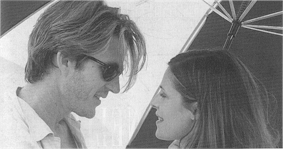And pretty low this new work is, as spoiled movie star Matthew Modine (Ferrara's second mistake, after the script) scrambles to remember his drug- and alcohol-induced actions while playing around in nighttime Miami. Although his romps involve clinches with Beatrice Dalle and Claudia Schiffer as pre- and post-blackout lovers as well as lots of addled posturing (always good for chewing a little thespian carpet), Modine is never more than negative space, a bland presence who is immediately forgettable whenever he lurches off screen (which isn't often). His ineffectual performance (on a par with his other work in Toronto, Tim Hunter's diffident and TVish The Maker [Contemporary World Cinema]) is only underlined by yet another crazed turn by Dennis Hopper as Modine's nightclub owner/videographer pal, a wild-eyed voyeur who gives the film what little energy it has. Followers of Ferrara (and there are many) are sure to note the absence of writer Nicholas St. John, whose collaborations with the director have produced some memorable, resolutely independent films. What, if anything, this means is unknown; what's sure, however, is that The Blackout is perhaps Ferrara's most self-indulgent – and certainly most forgettable – film. Infuriating worthlessness from a director whose best work is powerful and affecting.
Sure to be the talk of the fall movie season, Boogie Nights (Special Presentation) is a bracing antidote to Disco nostalgia and a startling splash of prodigiously imaginative filmmaking from 27-year-old filmmaker Paul Thomas Anderson, whose only previous feature is the little-seen gambling drama Hard Eight. Loosely inspired (if that is the word) by the rags-to-no-rags-to-riches story of porno star John "Johnny Wadd" Holmes (Mark Wahlberg, in a star-making performance as Eddie "Dirk Diggler" Adams), the film follows an ambitious troupe of pornographic filmmakers through the clubs, fads and excesses of the era. 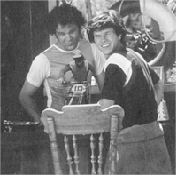Anderson manages the not-inconsiderable task of filming this age of moral innocence (think about it: you could do whatever you wanted) with a contemporary flair, fusing Scorsese's kitchen sink technical prowess (and great musical taste) with Tarantino's cynical hipness (and great record collection). He's also learned much about the handling of large casts from Altman and possesses the same relish for lowest-common-denominator American pop culture that Demme brought to his best films. As good as Julianne Moore, John C. Reilly, Don Cheadle, Heather Graham and William Macy are in support, Boogie Nights is owned by two veterans at different ends of the acting spectrum: Robert Ridgely and Burt Reynolds. The former is an unexpected smarmy wonder as "The Colonel James," the money man for the industry, while Reynolds does his best work since Deliverance (a quarter century ago!) as the earnestly serious Jack Horner, a two-bit visionary in dogged pursuit of a cockeyed American dream. This, finally, is what makes Boogie Nights great: it is a story that could only have happened in America, and that could only have occurred in those peculiar years that straddled two decades and mark, for now, the depths of greed, decadence self-delusion and lack of taste and sense to which society could sink. It will also, in the jaw-dropping bravado of its final shot, change forever the way Electric Light Orchestra's "Living Thing" is heard.
Austrian filmmaker Michael Haneke has carved out a distinctive reputation as a filmmaker obsessed with violence in and around families and the grave toll taken by such actions, explored in the singularly devastating trilogy of The Seventh Continent (1989), Benny's Video (1992) and 71 Fragments of a Chronology of Chance (1994). One of the few directors represented by two features at the 1997 Toronto Film Festival (where all his films have been showcased), both in the Masters section, Haneke continues in the vein that brought him to the world's attention (Funny Games) and seems to be forging ahead into an intriguing new arena that presents a side of his talent previously unseen (The Castle, from the novel by Franz Kafka).
Anybody who sees a lot of movies (or goes to lots of plays, or reads a lot of books, or listens to a lot of records) risks becoming jaded and insensitive to repeated themes and situations. Nevertheless, for even the weariest of viewers Funny Games will be a terrifying ordeal, a movie that takes the hoary thriller cliche of family under siege and brusquely dismisses all the reassuring cliches that assure audiences of a positive resolution. With their son Georgie, Anna and George (astonishingly played by Susanne Lothar and Ulrich Mühe, who also star in The Castle) have repaired to their lakeside villa for a holiday. Their plans are brutally disrupted by Peter and Paul, two young men with a hideous agenda. While the former seems nervous and unsure, the latter (Arno Frisch) is a demented ringleader of debasement whose increasingly elaborate and hostile exercises gradually come to include the by-now traumatized audience. As ground-breakingly brutal in its way as A Clockwork Orange, Funny Games – which supplants its classical score with book-ending blasts of John Zorn – also carries with it the same cautionary message for a media-weary race: complicity in the essential voyeurism of movie-going means that all bets are off and anything can happen. Without an American distributor at this writing, Funny Games is one of the true finds of the festival, a movie so singularly remorseless in its methodology that its pariah status, while perhaps inevitable, at present prevents a grim masterpiece from being seen by a wider audience in North America.
It isn't often that a filmmaker and his entire oeuvre go as unnoticed outside of his native land as the life and work of French director Benoît Jacquot, the subject of a special spotlight at the 1997 Toronto International Film Festival. With a body of work numbering some nine films in two decades (three of which couldn't even be found for this retrospective) and an almost complete absence of biographical details, the sidebar presents a fully formed filmmaker and his path to maturity. Of the three Jacquot films seen, his 1990 coming-of-age drama The Disenchanted seems the most provocative, both for its essentially French treatment of female adolescence and the ways in which a confused society has perverted that special time. Young Judith Godrèche gives a luminous performance as Beth, a strong-willed teenager who juggles four very different romantic encounters with a grace born more of reflex than training. Enigmatic, sinister, sad, but never less than completely involving, The Disenchanted presents an iconic view of adolescent passage that, like the poetry of Rimbaud favored by the protagonist, is both disturbing and inspirational.
With all the rumored bickering amongst the acting and writing factions on the feature film jury at this year's Cannes festival, it was perhaps inevitable that two smaller films would share the Palm d'Or, or Golden Palm, the grand prize, at the 50th anniversary of that tired but still essential yearly ritual of cinema. 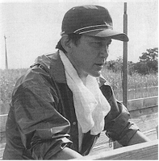One of those films, Abbas Kiarostami's Iranian drama Taste of Cherry, recently had its North American debut at Telluride and has been bought for American release by Zeitgeist Films. No such luck for the co-winner, the great Shohei Imamura's The Eel (Masters), a precisely visualized smorgasbord of emotions adapted from Akira Yoshimura's novel Glimmering in the Dark that finds the revered director, at 71, in complete control of his craft. Released from prison after serving eight years for killing his wife in the gruesome but oddly poignant passage that opens the film, taciturn ex-con Takuro (Koji Yakusho) retreats with his eponymous pet to a seaside village and the rural life of a barber. Joined by the frail young woman he rescues from a botched suicide attempt (Misa Shimizu) and a gaggle of local eccentrics, Takuro slowly builds for himself a life full of little disappointments and modest victories, small heartbreaks and big laughs. "Do you know that eels travel far?" someone says by way of sublime moral. "They travel as far as the equator, then come back to live in the mud here." Modest yet moving, The Eel is just like that folksy wisdom: low-key yet illuminating.
Languid and sensual, The Impostor (Discovery) was begun by Argentine director María Luisa Bemberg (I Don't Want to Talk About It), who died before completing her adaptation of the novel by Silvina Ocampo. At her behest, the film has been directed by her assistant director Alejandro Maci, who has preserved the air of mystery, class and gentle surrealism that mark Bemberg's best work. In 1930s Buenos Aires, young Sebastián (Antonio Birabent) flees the suffocation of his parents' house for their summer home in the middle of the pampas. When rumors of his solitary, eccentric existence filter back to his parents, they send Juan (Walter Quiróz) under the guise of a birdwatcher to check up on him. Mix in Sebastián's secret world, a mysterious Danish woman and a sinister bond, and The Impostor emerges as the kind of enigmatic period melodrama that the cinemas of Latin America are particularly adept with. One of the most visually arresting films caught at Toronto, The Impostor was photographed by Ricardo Aronovich, who also shot Alain Resnais' visual conundrum Providence.
And speaking of conundrums, for sheer artistic brevity consider the case of Maryland-based Rob Tregenza, perhaps the most courageous and focused independent feature film maker currently at work in the United States. His newest film, Inside/Out (Contemporary World Cinema), tells of four people, inside a secluded mental institution and around it, who are struggling to make some sense of the world. 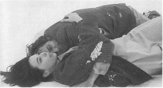Photographed in widescreen black and white and edited with mesmerizing deliberateness by Tregenza (truly the compleat filmmaker), Inside/Out has about it the air of deliberate inspiration, the stark rural landscapes and indecipherable characters who wander in them fusing into one puzzling and delicate canvas. His three films – Talking to Strangers (1988) and The Arc (1991) are the others – are languorous in a way that only the bravest and most committed filmmakers would dare, individual voyages of discovery that cumulatively reveal Tregenza as a technician of subtle skill and a storyteller who orchestrates and transforms the mundanities of life into spiritual quests for order and meaning. Putting his money where his eyes are, Tregenza also distributes his work (as well as Haneke's The Seventh Continent and films by Jean-Luc Godard, Béla Tarr, Jacques Rivette, Aleksandr Rogoschkin and others) through his company Cinema Parallel. For last year's inaugural Dialogues series in Toronto, Godard selected Talking to Strangers as a favorite and their bond as artists is strong: moviegoers who have graduated to Godard and are in search of like-minded fare are urged to partake of Tregenza's art and the cinematic riches he's collected at Cinema Parallel.
Looking for all the world like an episode of "Homicide:
Life on the Streets," with Beijing substituting for Baltimore and not a cop in sight,
Zhang Yimou's terrifically energetic new film Keep Cool is stylistically about as
far away from his previous films (including Raise the Red Lantern and To Live) as it is
possible to go.  Xiao Shuai, a beefy, lovesick bookseller (Jiang Wen, bulked up from his
starring role in Zhang's directorial debut, Red Sorghum [1988]) pursues An Hong,
the object of his desire (popular model Qu Ying) with insolent gusto. When that ardor
cools, he becomes involved with nerdy researcher Lao Zhang (Li Bao Tian), whose busted
laptop leads to the film's comic climax. Some critics have compared the jittery, hand-held
style not only to "Homicide" but to the films of Wong Kar-wai (of which only Chungking
Express [1994] and Ashes of Time [1992-1994] are currently available on video,
with Fallen Angels [1995] and Happy Together [1997] in the distribution
pipeline theatrically), and while they look and act somewhat alike, Zhang has more
important things on his mind in this time of great political foment in Asia and media
upheaval the world over. "People all want to change their lives," he told
Handling of the current mood in China. "Their heads are full of ideas. They are
reaching out for all kinds of new opportunities. Life is a ferment of desires and worries,
excitements and illusions." With Keep Cool, Zhang (who has a brief, sly cameo
early in the film as a nervous junk dealer) has gleefully joined the fray; will the world
ever see another Chinese costume drama?
Xiao Shuai, a beefy, lovesick bookseller (Jiang Wen, bulked up from his
starring role in Zhang's directorial debut, Red Sorghum [1988]) pursues An Hong,
the object of his desire (popular model Qu Ying) with insolent gusto. When that ardor
cools, he becomes involved with nerdy researcher Lao Zhang (Li Bao Tian), whose busted
laptop leads to the film's comic climax. Some critics have compared the jittery, hand-held
style not only to "Homicide" but to the films of Wong Kar-wai (of which only Chungking
Express [1994] and Ashes of Time [1992-1994] are currently available on video,
with Fallen Angels [1995] and Happy Together [1997] in the distribution
pipeline theatrically), and while they look and act somewhat alike, Zhang has more
important things on his mind in this time of great political foment in Asia and media
upheaval the world over. "People all want to change their lives," he told
Handling of the current mood in China. "Their heads are full of ideas. They are
reaching out for all kinds of new opportunities. Life is a ferment of desires and worries,
excitements and illusions." With Keep Cool, Zhang (who has a brief, sly cameo
early in the film as a nervous junk dealer) has gleefully joined the fray; will the world
ever see another Chinese costume drama?
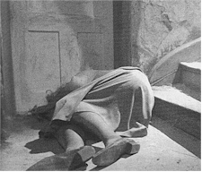Hungarian cinema has always been one of central Europe's best-kept secrets. Never the focus of international attention in the manner of the film industries of Poland and the former Czechoslovakia, Magyar cinema has nevertheless forged a tradition of quality moviemaking that dates from the turn of the century (Michael Curtiz, the director of Casablanca, got his start as actor Mihály Kertész and probably directed the first Hungarian feature, Today and Tomorrow, in 1912). Of the four Hungarian films in the 1997 Toronto festival (including Kusturica's Underground, a co-production), one of the most visually unique and dramatically absorbing was Attila Janisch's second feature Long Twilight (following Shadow on the Snow [1991]), adapted from Shirley Jackson's short story "The Bus." An elderly, forgetful professor (evocative Hungarian actress Mari Törócsik) embarks on a routine journey that soon turns hostile and surrealistic, as rickety public transport deposits her in a strange landscape that might be the countryside, and just might be her mind. Sure to crop up at subsequent regional festivals, Long Twilight is provocative, handsomely mounted and touchingly played.
Such showcase roles are hard to come by, which makes Richard Kwietniowski's crowd-pleasing Love and Death on Long Island (Contemporary World Cinema) particularly notable, featuring as it does the part of a lifetime for John Hurt (Contact, The Elephant Man).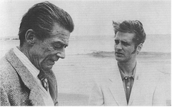 The great character actor is charmingly eccentric as Giles De'Ath, a reclusive and fussy intellectual Luddite who falls head over heels for Ronnie Bostock (Jason Priestley), the shallow young American movie star currently appearing in Hot Pants College II (De'Ath mixed up the theaters on his way to the latest Forster adaptation, an easy mistake to make in a multiplex – especially if you've never set foot in one) . Making a sheepish pilgrimage to the house of his hero after collecting clippings from teen magazines in a dossier he labels "Bostockiana," De'Ath ingratiates himself into the actor's life but discovers that the path of his heart is not without its perils. Adapted for his first feature by Kwietniowski from the novel by Gilbert Adair, Love and Death on Long Island also features a heroically selfless performance by Priestley as the poster boy of celebrity dimwits; any actor capable of playing that role straight demands to be taken seriously.
 Among the festival's biggest disappointments –
and, come to think of it, one of the most spectacular misfires in the annals of American
independent film – the horror film Office Killer (Midnight Madness) is the
directorial debut of celebrated photographer Cindy Sherman. When Constant Consumer
magazine suffers a downsizing at the hands of a ruthless editor-in-chief (Barbara Sukowa),
meek copy editor Dorine (Carol Kane) goes quietly over the edge and begins stalking her
officemates (including Molly Ringwald and Jeanne Tripplehorn). Not nearly as ribald as it
thinks it is, the movie squanders an intriguing cast on annoyingly strident characters and
manages its supposedly celebrated gore effects with a self-consciousness that negates
their power. Famous for her bizarre self-portraits and work that might be called Gothic
Irony, Sherman must've spent all her time in the darkroom, because she clearly has no idea
what makes a horror film tick.
Among the festival's biggest disappointments –
and, come to think of it, one of the most spectacular misfires in the annals of American
independent film – the horror film Office Killer (Midnight Madness) is the
directorial debut of celebrated photographer Cindy Sherman. When Constant Consumer
magazine suffers a downsizing at the hands of a ruthless editor-in-chief (Barbara Sukowa),
meek copy editor Dorine (Carol Kane) goes quietly over the edge and begins stalking her
officemates (including Molly Ringwald and Jeanne Tripplehorn). Not nearly as ribald as it
thinks it is, the movie squanders an intriguing cast on annoyingly strident characters and
manages its supposedly celebrated gore effects with a self-consciousness that negates
their power. Famous for her bizarre self-portraits and work that might be called Gothic
Irony, Sherman must've spent all her time in the darkroom, because she clearly has no idea
what makes a horror film tick.
Currently all the rage in Japan, yakuza gangster movies have been around for years but are currently in the midst of another renaissance. 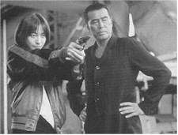Lead by a group of directors that include Takeshi "Beat" Kitano (Kids Return [1996], Fireworks [1997]), Ishii Takashi (Gonin [1995], Gonin 2 [1996]), Kaizo Hayashi (The Most Terrible Time in My Life [1993]) and inspired by the work of the influential Kumashiro Tatsumi (Like a Rolling Stone [1994]), who died in 1995, the genre also includes Rokuro Mochizuki (Another Lonely Hitman [1995]), whose Onibi: The Fire Within (Contemporary World Cinema) was one of two new works in this vein featured in Toronto (Fireworks was the other). Adapted from an original story by Yukio Yamanouchi, a legal adviser to Japan's largest criminal organization, the film stars 1970s crime film veteran Yoshio Harada as Kunihiro, an assassin once known as "Ball of Fire" who is determined to get on with his life following a stint in prison. Drawn reluctantly back into the criminal milieu he now detests at the same time he becomes involved in an unusual relationship with cocktail lounge singer Asako (Reiko Kataoka), he survives on his iron-clad code of ethics and a steely resolve. A fascinating genre only glimpsed in North America, the Japanese gangster is a bundle of contradictions and a group of steely resolve that puts Eastwood or Stallone to shame.
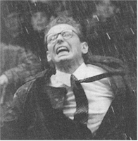Slovak-born Juraj Herz is one of the survivors of Czech cinema, a director whose filmography begins at the dawn of the "Czechoslovak Film Miracle" in 1965 and continues with the new Passage (Contemporary World Cinema), which Handling proclaimed in the Toronto festival catalogue "is one of the most brilliant Kafkaesque films I have seen, capturing the full flavor of what it is like to enter into Kafka's very special universe." Based on a novel not by Kafka but by Karel Pecka, the movie follows the surreal comic odyssey of Michal Foreman (Jacek Borkowski), whose drive to work on his rainy tenth wedding anniversary turns into a nightmare when he finds himself incapable of leaving the network of indoor and covered corridors common in the downtown area of Prague. Full of the earthy humor and astonishing visuals common to the Czech and Slovak schools of filmmaking (a literally earth-shaking tryst in a public toilet is a first-reel highlight of the film), Passage is a concentrated, flavorful dose of the flamboyant, sensual, humanistic worldview prevalent in that part of eastern Europe.
You know you're in the presence of art-film esoterica when the post-screening discussion centers more on musculature, lighting and camera equipment than on-set gossip, but that shouldn't hinder an appreciation of James Herbert's Scars (Discovery). Mixing luminous Renaissance location work with the vulnerability of youth, the film jettisons conventional narrative to trace the mysterious interactions of two young people (Carter Davis and Alexandra Rosetti) as they contemplate their naked bodies and their elusive relationship. It's more fun than it sounds, primarily because Herbert mixes his formal training as a painter, photographer and filmmaker with the more mischievous sensibility he brought to his music video work ("It's the End of the World as We Know It [And I Feel Fine] for R.E.M. and "Love Shack" for the B-52's) to create a film that is at once contemplative and mercurial.
Although derivative of every loopy tough-guy firearm opera since Pulp Fiction and the dawn of the word "Tarantino" as an adjective, Peter O'Fallon's Suicide Kings (Special Presentation) is actually better than most subsequent efforts by virtue of a truly offbeat premise and another succinct turn by Christopher Walken, who spends almost the whole movie duct-taped to a swivel chair. 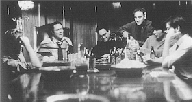He's Charles Barrett (aka Carlo Bartolucci), the smooth boss of crime bosses in New York, kidnapped by a bunch of rich young guys (including Henry Thomas, Sean Patrick Flannery, Jay Mohr and Johnny Galecki) and stashed at a house in Long Island – destination of choice, apparently, for this year's crop of screenwriters – to counterbalance the kidnapping of the sister of one of the guys. Got that? Then the rest will be a piece of cake, as the original plan to have Barrett use his underworld influences to find the kidnappers before they do something rash goes very awry, with results both comic and violent. In addition to Walken, the good news here is that comedian-turned-supposed-actor Denis Leary follows his solid turn in the slight The Matchmaker with a modest comic tour de force as Lono, Walken's temperamental, wisecracking lieutenant (his riffs on expensive shoes and rap music are worth the price of admission alone). Director O'Fallon cut his teeth on episodes of Thirtysomething, Northern Exposure and Party of Five but proves he can handle solid food with this entertaining if derivative comic thriller. The title apparently refers to the king of hearts (the one with the sword through his head), but as fans of 1960s French films know, that title is already taken.
Fans of an entirely different stripe, the work of Cairo-born, Canada-based Atom Egoyan, will be both surprised and suspicious to learn that his new movie, The Sweet Hereafter (Opening Night Gala) is actually an adaptation of the novel by Russell Banks that traces the ripple effects of a tragic school bus crash on the residents of a 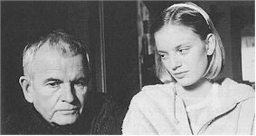remote village in British Columbia when their solitary grief is disrupted by an ambulance-chasing lawyer intent on enlisting them all in a supposedly lucrative class action suit against the town. And while the film plays like nothing Egoyan has previously made (1994's Exotica was his most recent film), it does touch squarely on his ongoing fascination with family conflict in the context of a larger tragedy. As melancholy barrister Mitchell Stephens, Ian Holm gives a performance that perfectly balances the confusion of disaster with the impulse for justice at any cost and the greed that can blind one to what is right and what is possible. A fragile, special work possessed of an interior logic all its own (and featuring an all-star lineup of the best Canadian acting talent of the moment), The Sweet Hereafter opens in the United States at the end of the year and should be embraced by those who look for thoughtful, deliberate, provocative cinema.
What constitutes a children's film in the rest of the world is very different from what passes muster in the U.S. of A., as demonstrated by Bogdan Dumitrescu's 1994 German/Romanian co-production Thalassa, Thalassa, Return to the Sea (Balkan Cinema: Home Truths). 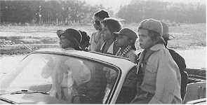When a gaggle of Romanian kids stumble across an obviously stolen but cherry Jaguar convertible in a remote barn, it's off to the (presumably Black) sea for the merry band, who spend the 42 klicks doing a gentle, non-lethal variation on Lord of the Flies (without the conch). The fine sense of wonder and empowerment as the urchins motor along to parts unknown is undone for western audiences by their indulgence in all manner of vice, from drinking to smoking and banging the car up pretty good. Not to be prudish at all, but one wonders exactly what the target audience might be for a film that isn't involving enough for the kiddies (the 90 minutes is pretty pokey) nor remotely innocent enough to pass adult muster. And there are a lot of films like this in eastern Europe, artistic orphans that don't seem to have a home much of anywhere.
Wandering is also the theme of Manuel Poirier's oddball triumph Western (Contemporary World Cinema), his fourth film to fondly examine the lives, loves and adventures of the rural French lower middle class. Although he's been robbed by pint-sized Russian émigré Nino (Sacha Bourdo), travelling Spanish shoe salesman Paco (Sergi Lopez) teams up with the diminutive hustler while on an enforced three-week hiatus from the lover (Elisabeth Vitali) he met when Nino first ripped him off. As this odd couple for the 1990s (men behaving Frenchly?) travel the backroads of Brittany, it becomes apparent that Paco's uncanny success with women is matched only by Nino's ability to self-destruct during even the most casual human contact. But, as Paco learns from the wily Nino, you can always learn something new. Western is the kind of movie where adversity is dwarfed by cheerfulness, as well as a kind of cosmic decree that all adventures turn out for the best. And no matter how selfish or criminal their characters act, Lopez and Bourdo imbue their characters with warmth and an increasingly tattered but intact dignity. With a heart as big as its widescreen photography, Western seems destined for American art house success; all it needs now is a distributor with Nino's wiles and Paco's luck.
There seems no better way to conclude this whirlwind tour of the 1997 Toronto International Film Festival than with The Year of the Horse (Special Presentation), the blessedly loud and exceptionally engaging story of Canada's own Neil Young and his thirty year odyssey of music with bassist Billy Talbot, drummer Ralph Molina and guitarist Frank (Poncho) Sampedro – known as "the new guy" since he's only been with the band since 1974. 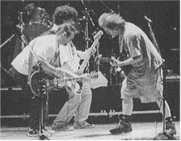Using a stylized approach that mixes 8mm and 16mm film with a thundering Dolby mix ("made loud to be played loud" it says right there at the beginning), the nine (complete!) songs filmed during the 1996 tour of Europe and backstage footage (1976 and 1986) culled from extensive archival material – say, when is that massive followup to Decade coming out, anyway? – show a group of guys completely in synch with one another. American independent darling Jim Jarmusch has finally found an appropriate subject for his annoyingly self-conscious approach, turning in the most energetic and sincere piece of work he can be expected to make. While its 107 minutes may be long for the uninitiated, believers will be enthralled by the synergy, engulfed by the sound and transported by the power of Crazy Horse. An unexpected and invaluable treat for the art-weary, The Year of the Horse will be released in the United States by October Films later in the fall.
Having fun and surviving: true for Neil Young and true for anyone who wants to get the most out of a festival as big, inclusive and rewarding as Toronto.
Contents | Features | Reviews | News | Archives | Store
Copyright © 1999 by Nitrate Productions, Inc. All Rights Reserved.